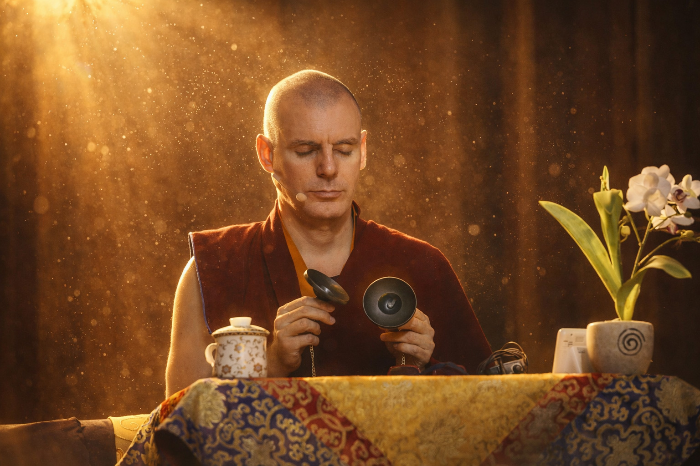

Cursos
Un camino de cinco niveles sobre textos clásicos y comentarios vivos.
Ver la formaciónDirector espiritual · Fundación Sakya Paramita
Del arte y la psicología en Nueva York a la tradición Sakya en Nepal. Hoy acerca el Dharma, en español, a un mundo entero.
La semblanza
Nació en Montevideo en 1972, hijo de padres gallegos, y creció en Estados Unidos. Estudió arte —con la fotografía como oficio— y psicología, hasta que un retiro en Nueva York, en 1993, lo puso por primera vez frente a un maestro y frente al Sutra del Corazón.
Desde entonces su vida ha sido un solo gesto sostenido: cruzar hacia el Dharma, y tender el puente para que otros crucen.
2024. Durante años se le conoció como Lama Rinchen; en enero recibió el título de Khenpo —la más alta distinción que la tradición Sakya concede a un maestro plenamente cualificado—.


Al hablar de un maestro, deberíamos hacerlo hasta tener lágrimas en los ojos.Khenpo Rinchen Gyaltsen
El linaje
La autoridad de un maestro no se declara: se recibe.
Boceto de dirección: orden de maestros y retratos en los nodos a validar con Khenpo/Ale.
La misión
En 2012, Su Santidad Gongma Trichen lo nombró Maestro Vajra y le confió una misión: llevar el Dharma al mundo hispano. Un año después fundó Paramita en Pedreguer —tradición y tecnología para acercar el estudio al hogar de cada practicante—.
La mirada
Durante años ha retratado la vida de los monasterios, los rituales y los caminos de peregrinación. Su archivo es su forma de habitar lo sagrado.
Sus enseñanzas
Un camino de cinco niveles sobre textos clásicos y comentarios vivos.
Ver la formaciónEnseñanzas, conferencias y entrevistas donde el Dharma se cuenta en español.
Ir al canalPractiquemos juntos
«El trabajo en equipo permite el crecimiento de la Sangha.»
Déjanos tu correo y recibe sus enseñanzas y las novedades de Paramita.